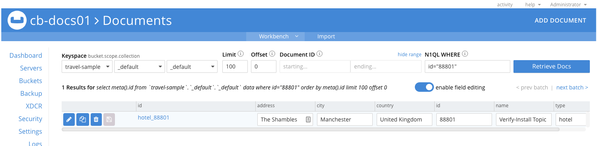

Verify a Sync Gateway Install
Configure and verify your Sync Gateway installation; securely sync enterprise data from cloud to edge!
This is Step 4 in the Start Here! topic group. Here we will verify that you can connect your sync gateway to a Couchbase Server and synchronize changes whether made in Couchbase Server or through sync gateway’s REST API.
Related Start Here! topics: Introduction | Prepare | Install
|
Preparatory Steps
Ensure you have read, and acted-upon, the information and steps in Prepare and Install
|
These instructions are for local or server based deployments. If you are using a container such as Docker, see this blog post on using Docker with Couchbase Mobile for additional details.
- Steps in Getting Started
-
Introduction | Prepare | Install | Verify
Introduction
In this final step of the Getting Started topic we will look to link your Sync Gateway to a Couchbase Server bucket and verify that sync is taking place by executing a CRUD cycle. You will need to edit the configuration file used in the Install step to point to a bucket on your Couchbase Server — see Bootstrap Sync Gateway.
On completion of this topic you will have a working sync gateway instance that you know syncs with a Couchbase Server. You will have successfully completed installation and can now build on this with confidence.
Bootstrap Sync Gateway
To configure sync gateway to connect to a Couchbase Server:
-
Ensure your sync gateway service is stopped/unloaded
-
Edit the configuration file you used in Install and replace the contents with those shown in Example 1.
The configuration points to your Couchbase Server cluster, which we will use to verify that you can synchronize changes made through the sync gateway API with those made through Couchbase Server.
-
Ensure you start Couchbase Server
-
Restart/Load your sync gateway to pick-up the changed configuration
{
"bootstrap": {
"server": "couchbases://localhost", (1)
"username": "sync_gateway", (2)
"password": "password",
"server_tls_skip_verify": true, (3)
"use_tls_server": true (4)
},
"logging": { (5)
"console": {
"enabled": true,
"log_level": "info",
"log_keys": ["*"]
}
}
}About the Configuration Properties:
| 1 | Here we point to the Couchbase Server cluster using secure connection. Server ships with self signed certs that work out of the box, as long as server_tls_skip_verify is set, as it is below. |
| 2 | Here we provide the credentials for the RBAC user that you created on the Couchbase Server Admin Console — see Configure Server for Sync Gateway |
| 3 | Here we opt to ignore CA Cert verification of the certificate presented by the server; allowing for example use of self-signed certificate. The connection is unverified but encrypted. |
| 4 | Optionally, you can choose to run without TLS, by setting this value false.
In that case you should also use the plaintext URI couchbase://localhost to connect. |
| 5 | Define your logging requirements: Here we set general diagnostic console logs on. If you’re having issues then refer to Logging for how to tune diagnostics to provide additional troubleshooting help |
Run the following in a terminal:
bin/sync_gateway -<options> sgwconfig.json (1)| 1 | Optionally provide any CLI flags you require to use |
Add a Database Configuration
We can now use the Admin REST API to add a database to our sync gateway cluster.
|
The |
The curl command shown in Example 2 below a traveldb database pointing to the Couchbase Server’s travel-sample bucket.
curl --location --request PUT 'http://127.0.0.1:4985/traveldb/' \(1)
--header "Authorization: Basic $DIGEST" \
--header 'Content-Type: application/json' \
--data-raw '{
"bucket": "travel-sample", (2)
"num_index_replicas": 0 (3)
}'| 1 | Here we specify the name of the sync gateway database — traveldb |
| 2 | Now we point traveldb at the Couchbase Server bucket travel-sample, which we created in Configure Server for Sync Gateway |
| 3 | Set to zero for this example database |
Add a Sync Gateway User
We can now create a sync gateway user and role to allow secure access during replication on this sync gateway cluster.
Add a role
The curl command shown in Example 3 requires basic authentication using the api_admin Couchbase Server RBAC user’s credentials we created in Step 2 of Create RBAC users.
It adds a role called stdrole.
curl --location --request PUT 'http://127.0.0.1:4985/traveldb/_role/stdrole' \(1)
--header "Authorization: Basic $DIGEST" \
--header 'Content-Type: application/json' \
--data-raw '{
"name": "stdrole",
"admin_channels": ["newrolechannel"] (2)
}'| 1 | Here we identify the name of the sync gateway database — traveldbThe action, _role andThe role’s name stdrole |
| 2 | Now we identify the channels accessible to users assigned this role; these will be used by the Sync Function to control access. |
Add the user
The curl command shown in Example 4 requires basic authentication using the api_admin Couchbase Server RBAC user’s credentials we created in Step 2 of Create RBAC users.
It adds a user called sgwuser1.
curl --location -g --request POST 'http://localhost:4985/traveldb/_user/' \(1)
--header 'Content-Type: application/json' \
--header "Authorization: Basic $DIGEST" \(2)
--data-raw '{
"name": "sgwuser1", (3)
"password": "passwordstring",
"roles": ["stdrole"] (4)
"admin_channels": ["public"] (5)
}'| 1 | Here we identify the name of the sync gateway database — traveldb and the required object, _user |
| 2 | The user/password credential represented in the Authorization header relate to the Sync Gateway admin user |
| 3 | Here we give the credentials of the user we want to create. So, the user’s name sgwuser1 and required password.
If we omit the password a random password is generated. |
| 4 | Now we identify any roles accessible to this user; it will inherit any channels associated with the role(s). |
| 5 | Now we identify any channels accessible to this user, in addition to those inherited from the role; these will be used by the Sync Function to control access. |
Connect to Sync Gateway
| You can use Console Logs to aid diagnosis of connection issues |
-
With sync gateway and Couchbase Server started, point your browser to the sync gateway url, typically on port 4984, but this can be changed — see: REST API Access.
So, for example:
http://localhost:4984 -
Check that you receive a response similar to this:
{"couchdb":"Welcome","vendor":{"name":"Couchbase Sync Gateway","version":"3.0"},"version":"Couchbase sync gateway/{version-full}(376;e2e7d42) EE"}If there are issues then check the Console Logs for more information. Where necessary you can redirect console output to a file — see: Redirect Console Logs.
| If sync gateway is behind a load balancer then check the websockets configuration — see Load Balancer. |
Verify the CRUD Cycle
Here we will use CURL and sync gateway’s REST API to
-
Create a New Document: Use the API to add a document and check the document on Couchbase Server
-
Get a Document Using the API: Read the document back from Couchbase Server using the sync gateway API
-
Update a Document using API: Update the newly created document and observe the changes in Couchbase Server
-
Sync a Couchbase Server Change Update the document in Couchase Server and check the change in sync gateway
-
Delete a Document Using API Delete our document and check its state on Couchbase Server and sync gateway.
Remember to use the credentials of the Couchbase Server RBAC user for authentication.
Create a New Document:
Within a terminal use CURL to issue the following POST request, which adds a new document to the Couchbase Server bucket get-started-bucket by way of the sync gateway database get-started-bucket we configured in Bootstrap Sync Gateway
DIGEST=`echo -n sgwuser1:password | base64`
curl --location --request PUT 'http://localhost:4985/traveldb/hotel_88801' \
--header "Authorization: Basic $DIGEST" \
--header 'Content-Type: application/json' \
--data-raw '{
"_id": "hotel_88801",
"id": "88801",
"type": "hotel",
"name": "Verify-Install Topic",
"address": "The Shambles",
"city": "Manchester",
"country": "United Kingdom"
}'{"id":"hotel_88801",
"ok":true,
"rev":"1-f28b5cc13a38892f4f85913d4e654270"}View the document in Couchbase Server Admin Console to verify it syncs from sync gateway database.
-
Within the Admin Console, select Buckets and hit the Documents button to open the Document Editor tab.
-
Within the Document Editor tab:
-
Enter
travel-sampleas Bucket -
Leave Scope and Collection as
_default -
Enter
id="88801"as M1QL WHERE query -
Enter
You will see the response shown in Figure 1. The document should include any changes made through sync gateway, including the initial create.
Figure 1. Couchbase Server Document Editor
-
Get a Document Using the API:
curl --location --request GET 'http://localhost:4985/traveldb/hotel_88801' \
--header "Authorization: Basic $DIGEST"{
"_id": "hotel_88801",
"_rev": "1-f28b5cc13a38892f4f85913d4e654270",
"address": "The Shambles",
"city": "Manchester",
"country": "United Kingdom",
"id": "88801",
"name": "Verify-Install Topic",
"type": "hotel"
}Update a Document using API:
curl --location -g \
--request PUT 'http://localhost:4985/traveldb/hotel_88801?new_edits=true&rev=1-f28b5cc13a38892f4f85913d4e654270' \(1)
--header 'Accept: application/json' \
--header 'Content-Type: application/json' \
--data-raw '{
"_id": "hotel_88801",
"id": "88801",
"type": "hotel"
"name": "Verify-Install Topic Updated", (2)
"address": "The Shambles",
"city": "Manchester",
"country": "United Kingdom",
"email": "enquiries@hotel_88801.internet" (3)
}'| 1 | This revision is the one returned by the response to the initial POST request — see: Response to Add Document Request |
| 2 | Here we change the text of the name field. |
| 3 | Here we add an email field. |
{
"id": "hotel_88801",
"ok": true,
"rev": "2-249366b198e81f203d7ae9eb54376210" (1)
}| 1 | Here the "ok":true indicates success, whilst the revision shows it is the second change to this document. |
Check Document on Couchbase Server. Does the document contain the changed data value?
Sync a Couchbase Server Change
This will show that changes made using Couchbase Server are replicated to sync gateway.
-
Within the Couchbase Server Document Editor
-
Retrieve
88801if it is not currently displayed
Usemeta().id="hotel_88801"as query -
Edit the email value to contain
reception@hotel_88801.internet -
Edit the name value to contain
Verify-Install Topic-Updated-In-Server -
Save the change.
-
-
In your terminal, use the API to get the document again — see Get a Document Using the API:
You should see the change you made in Couchbase Server reflected in the response. For example:{"_id":"hotel_88801","_rev":"3-cc2e758ef63b0daf5b01b2baf98c72b6", (1) "address":"The Shambles","city":"Manchester","country":"United Kingdom","email":"reception@hotel_88801.internet","id":"88801","name":"Verify-Install Topic-Updated-In-Server","type":"hotel"}1 Note that the revision sequence is now 3, up from the 2 returned in our Response to Update Document Request 2 Note that the email and name fielda now contains both the change made in sync gateway and the amendment made in Couchbase Server ("reception")
Delete a Document Using API
curl --location -g --request DELETE 'http://localhost:4985/traveldb/88801?rev=3-cc2e758ef63b0daf5b01b2baf98c72b6' (1)| 1 | Note that we provide here the revision ID of the latest revision (3), as returned in the response to the last GET request. |
You should see the following response:
{
"id": "hotel_88801",
"ok": true,
"rev": "4-03f1ba127340e8c50c31a36279298e60" (1)
}| 1 | You can see here that the delete counts as the fourth change/revision. Again "ok":true indicates the delete was successful. |
-
Check Document on Couchbase Server and you should now see "No Results"
-
Use the API to get the document — see: Get a Document Using the API:. Assuming the delete worked you should see the following response:
{"error":"not_found","reason":"deleted"}%
Ways to Verify Sync
To verify that document changes have been replicated, you can:
-
Monitor the sync gateway revision number returned by the database endpoint (GET /{tkn-db}/). The revision number increments for every change that happens on the sync gateway database.
-
Query a document by ID on the sync gateway REST API as shown in Check Document on Couchbase Server. Use (GET /{tkn-db}/{id}) — see: REST API Access for more.
-
Query a document from the Query Workbench on the Couchbase Server Console.